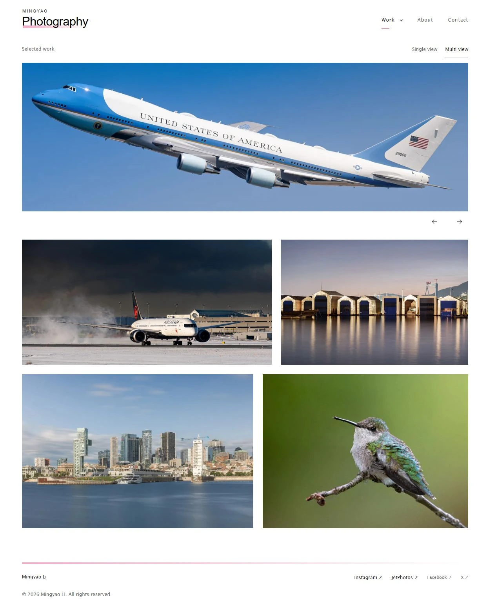
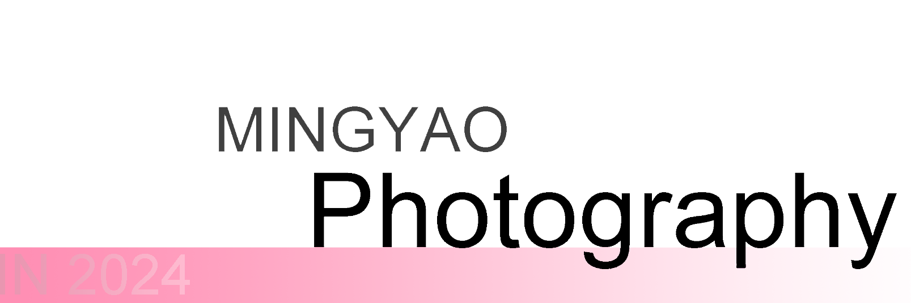
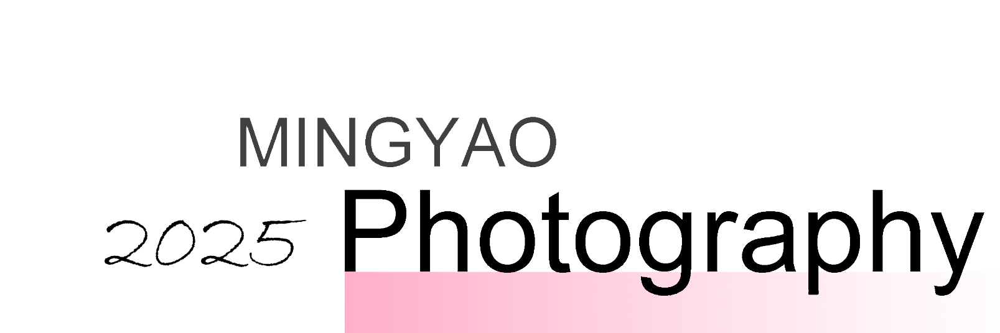

From a first image experiment to a considered portfolio. The pages, marks and small decisions that made the website its own.
English edition · Front-end design & identityHistory reviewed through 2 October 2026

A photographic website, and the small decisions that made it its own.
PROLOGUE
A history of refinement, not replacement.
The website has changed substantially. Its most familiar visual ideas have survived.
The earliest page is almost disarmingly simple: one aviation photograph, repeated at different widths. By the end of the same day, a handwritten personal logo and a moving gallery were already taking shape. The first lasting instinct was clear: let a photograph make the introduction.
The white portfolio of March 2023 changed the frame. A personal wordmark arrived in August; pink became its distinguishing accent. In April 2024 that accent softened into a fade toward white, and the logo acquired a year. The 2025 revision kept the same structure. The present identity removes the annual stamp while retaining the name, the larger Photography line and the pink fade.
That continuity matters. The current site is not visually unrelated to the earlier one. It is a quieter expression of ideas already present: a wide photographic opening, a restrained navigation, black lettering on white, and a small amount of pink. Its clearest changes concern selection, proportion and the amount of interface surrounding each image.
CHRONOLOGY
Four years, five visual chapters.
Dates below use the Toronto calendar date of the recorded event. The recorded project begins on 10 November 2022.
A modern reconstruction of the first recorded page: one aviation photograph at successive widths. Inspect image ↗
There is no finished brand, gallery navigation or portfolio heading in the first saved page. A plain testing line precedes nine copies of the same picture, stepping down from large to small. The earliest website is a direct study of photographic scale.
The photograph shows a Pratt & Whitney-branded aircraft on the runway. Aviation is therefore present at the beginning of the recorded site, rather than being a later category attached to a general portfolio.
Within the same morning, the experiment becomes a homepage and the address mingyaophoto.com is attached to the project. Further photographs and presentation ideas follow. The recorded address establishes an early intention to create a personal website; it does not establish the exact first day visitors could see it.
10 NOVEMBER 2022, EVENING
A signature above a moving image.
By the evening of the first day, a handwritten personal mark sits above the photography.
Modern reconstruction of the November 2022 navy slideshow and moving album. Inspect image ↗
The logo is informal and handwritten, with Mingyao above and Photography offset below. Its white strokes suit the dark page and translucent header. The separated lines feel like a personal signature rather than a formal corporate emblem, bringing a human presence to the aviation photographs.
The evening prototype uses a deep navy canvas, a header laid over the photograph, and the simple links Home and Gallery. The upper slideshow advances automatically. Beneath it, a separate moving album uses variable-width images and two rows on larger screens.
This version feels cinematic and immersive. It also establishes a recurring tension: how to combine a strong, wide opening image with a larger body of work. The contemporary site still answers that same question, with more deliberate controls and spacing.
Image: a modern reconstruction of the November 2022 page. The slide is representative of the early sequence.
MARCH 2023 / THE EARLY SHOWCASE
An early design is preserved.
An archived showcase preserves the navy aviation slideshow after the main website moved toward white.
Original preview image preserved in the early showcase archive in March 2023. Inspect image ↗
An early showcase was saved on 19 March 2023. Its preview presents the white script logo over a large aircraft image, then a navy interval and an irregular tiled aviation album. It preserves the character of the first design: immersive photographs, a personal signature and a moving collection.
The saved page matches an earlier version of the main website, from before the white redesign was completed on 9 March. It preserves an earlier chapter rather than showing a later return to navy. That distinction keeps the visual sequence clear.
The preview makes the earliest design easier to appreciate as a complete experience. The logo sits within the photograph instead of above it; the dark background carries the viewing experience downward; the lower album feels like a collection in motion.
The preserved showcase records an earlier design even though it was saved after the white-page transition.
Modern reconstruction of the March 2023 white portfolio. Inspect image ↗
The personal identity is now a plain, bold MINGYAO LI link. Portfolio, About Me and Contact run across the top. A MY PORTFOLIO heading introduces a tightly packed wall of photographs, with narrow divisions and manually nested half- and quarter-width groups.
Signika and Montagu Slab appear in the typographic palette, giving the interface a different voice from the earlier handwritten-and-serif combination. Larger image previews are also present in this era. The later redesign refines an established viewing experience.
The site now gives the images a neutral backdrop and separates information into clear personal pages. It is less atmospheric than the navy prototype, but more adaptable to landscapes, portraits and different colors. These are the structural roots of the present website.
This is a substantial change of atmosphere, but it preserves the main priority: the photographs occupy the page, while the interface stays relatively small.
16-17 MARCH 2023
The panorama returns to the white page.
The slideshow is not abandoned. It is combined with the new portfolio shell.
A panorama above a white photo wall is already the design by March 2023. The current wide opening is an inherited composition, with a revised browsing system around it.
A language indicator appears on 16 March. Later that day, a four-image panoramic slideshow is added above the white portfolio grid. The cinematic opening from the early design is brought into the newer, more neutral photographic frame.
A French homepage follows on 17 March. The new language option expands how visitors can enter the portfolio, while retaining the same photographs and basic visual structure.
The panorama provides an immediate focal point, while the wall below lets visitors scan many subjects. That combination works as a recognisable opening, but it also creates two modes of attention: passive motion above and active selection below. The 2026 work attempts to make the transitions feel more coherent.
The design inheritance is concrete: the white shell and the panoramic photograph become a long-lived pairing, rather than a completely new invention in the present site.
09 MAR
White page; photo wall first.
16 MAR
Four wide hero images added.
17 MAR
French edition introduced.
16 AUGUST 2023 / COLOR IDENTITY
The first color wordmark has its own vocabulary.
A new personal color mark replaces the plain name, establishing the stacked photographic wordmark.
Color 2023 - original artwork.
The name above the discipline.
MINGYAO is smaller than Photography. This hierarchy gives the profession the dominant line and the person a quieter signature. The same relationship is recognisable in the current wordmark.
Two offset squares.
Soft pink and purple blocks sit diagonally to the left. They form a compact graphic device that can change color across related editions, separate from the typography itself.
Pink arrives as a brand accent.
A bright pink underline and the small descriptor Colored distinguish the color edition. This is the earliest inspected personal logo family with a clearly visible pink line beneath Photography.
The color identity is recorded on 16 August 2023. Its main wordmark does not carry a large annual date.
16 AUGUST 2023 / MONOCHROME IDENTITY
Black and white is a coordinated edition.
A full monochrome identity introduces the page. A separate compact badge closes the edition.
Monochrome 2023 - original artwork.
Badge 2023 - original artwork.
The monochrome family shares the stacked typography and diagonal-square geometry with the color logo. Its gray upper block and dark lower block replace the soft color accents, while the wording identifies a dated black-and-white edition.
The larger mark introduces the black-and-white page. The compact edition badge appears in its footer. The two forms have complementary roles: one identifies the photographer, while the other marks the photographic edition.
This is the most explicit identity system in the early history: a personal color portfolio and a related editorial edition. The variation is controlled by a common structure, rather than two unrelated logos.
In design terms, the squares carry more visual weight in monochrome. The later shift toward a pure wordmark can be read as a reduction of that weight. That is an interpretation of the forms, not a documented statement of the original designer's intent.
Original transparent assets reproduced with only surrounding empty canvas excluded. Their relative placement within each mark is preserved.
AUGUST 2023 / THE PAGES
Two portals, one portfolio language.
The color homepage exposes a second logo as a link into the black-and-white page.
Modern reconstruction of the August 2023 black-and-white edition. Inspect image ↗
Both views are modern reconstructions of the August 2023 pages. They share the white shell while presenting different color treatments.
OCTOBER 2023 - JUNE 2024
Editorial branches are narrowed, then retired.
The history includes deliberate withdrawal, not just the accumulation of new pages.
14 OCT 2023
The monochrome header becomes smaller.
The black-and-white header becomes smaller and an explanatory special-content notice is added. The edition remains visible, with a quieter introduction.
17 DEC 2023
Duplicate material is cleared away.
A year-end cleanup clears away duplicated and superseded material. The public identity remains familiar rather than introducing another new logo.
14 APR 2024
A retirement notice replaces the BW gallery.
The black-and-white gallery is replaced by a retirement notice. The separate French feature is also withdrawn, narrowing the site around its main presentation.
09 JUN 2024
The French chapter is closed.
Obsolete French pages are removed. Some later views retain a language label, but the separate translated experience no longer forms an active chapter of the site.
These earlier editions belong to the historical identity, even though they are no longer part of the current public presentation.
2024
The gradient becomes the signature.
27 APRIL 2024 / THE ORIGINAL ARTWORK
Two 2024 directions, one adopted identity.
The archive preserves two variations. The main website adopts the one with a handwritten year beside the wordmark.

Alternative 2024 - original artwork.
Gradient 2024 - original artwork.
AN ALTERNATIVE PRESERVED IN THE ARCHIVE
The year is faintly embedded in the pink bar, to the left of the name. The bar runs across a wider lower band. This alternative is preserved in the archive, but its use on the public pages is not established.
THE IDENTITY ADOPTED BY THE WEBSITE
A handwritten 2024 sits beside the wordmark. The gradient begins under Photography and fades to the right. This is the design adopted by the main homepage, with a slightly larger presence than the previous color identity.
The alternatives show an identity being refined. One brings the year into the color band; the other gives the handwritten date its own space. Both belong to the creative history, while the adopted mark defines the public visual chapter.
27 APRIL 2024 / THE ACTIVE IDENTITY
The pink line becomes a soft gradient.
The diagonal-square emblem gives way to a dated wordmark, while the stacked name and Photography remain.
Modern reconstruction of the April 2024 page with its adopted gradient identity. Inspect image ↗
The active 2024 identity keeps the familiar typographic hierarchy but removes the square device and the Colored descriptor. Its handwritten annual stamp adds a personal, editorial character next to otherwise restrained black lettering.
The pink bar now fades toward white, instead of retaining the stronger pink-to-lilac accent of the 2023 underline. It is strongest at the left and becomes almost white toward the right. The lower strokes of g, p and y pass across this band, making the letters and color feel like one assembled mark.
The page itself stays white and recognisable. The second black-and-white mark disappears from the main header, leaving one personal identity. Earlier in April, the wide Air Force One photograph enters the opening sequence. That same image remains a prominent bridge to the present website.
Aesthetic continuity is stronger here than the individual revisions might suggest: the pink accent evolves in character, while the relationship between the name, profession and opening photograph remains stable.
Image: reconstruction of the April page. The displayed slide is representative of the sequence, not evidence of which frame a visitor saw first in 2024.
9 JUNE 2024
Portraits receive a page of their own.
Portrait becomes a top-level destination, broadening the website beyond its existing photographic subjects.
Modern reconstruction of the first portrait page, June 2024. Inspect image ↗
The portrait page broadens the public presentation of the practice. Its three images place people alongside the already established aircraft, places and wildlife. The new navigation item makes that change visible before a visitor scrolls.
The 2024 logo, white background and familiar information pages remain. A new subject receives a new destination without requiring a different brand. This is a useful model of continuity: expand the work while keeping the frame recognisable.
JUNE - OCTOBER 2024
The photography changes inside a stable frame.
Not every meaningful evolution is a new layout or a new logo.
Historical bird photograph from the recorded updates; an archive image, not a new portfolio selection. Inspect image ↗
June brings photo replacements, a separate portrait page and the withdrawal of older language editions. July introduces more bird photography and successive profile-image updates. October revisits the portrait photographs themselves.
These successive updates show a working portfolio being maintained, not simply a design demonstration frozen at release. A site's perceived identity is formed by its images as much as by its navigation or wordmark: faces, aircraft, cities and birds change the breadth and pace of the experience.
The visible shell remains largely consistent during these updates. That stability is a strength of the earlier design. Its limitation is different: fixed photo groupings make the presentation depend on the exact pictures placed in each position.
The later composition system addresses that practical constraint while preserving the principle that original photographs, rather than explanatory cards, should carry the page.
2025
A recognisable design is carried forward.
4 JANUARY 2025
A new year, the same visual family.
The annual artwork changes to 2025, carrying forward the composition established in 2024.

Gradient 2025 - original artwork.
The 2025 artwork arrives on 4 January. Its handwritten annual stamp changes, while the name, profession and pink fade remain almost unchanged. The identity feels familiar at a glance because its strongest relationships are retained.
The refresh appears across the homepage, portrait page, About and Contact. It carries the identity through the whole public site, giving the different destinations the same personal signature.
The structure remains familiar: MINGYAO above Photography, a script date beside it, and a pink fade below. This is an iteration of the 2024 family rather than a new identity system.
The photographic shell also remains stable: the wide opening, white background, small navigation and dense photo wall are carried forward. The next substantial recorded design chapter begins in October 2026.
THE PRE-REDESIGN PUBLIC WEBSITE
The original site already had a clear identity.
An actual capture from before the October 2026 refactor preserves the mature annual-wordmark design.
Actual public-site capture from 1 October 2026, before the refactor, showing the 2025 identity. Inspect image ↗
This is the website many visitors would recognise: a small personal identity at upper left, a simple navigation opposite it, a long aircraft image and a densely assembled photographic wall below. Pink is used sparingly, mainly within the logo.
The design is not inherently poor. Its white background supports very different subjects; the wordmark is memorable; the wide opening gives the page a strong first image. Those qualities explain why the present redesign feels like a continuation rather than a replacement.
The pressure comes from accumulation. Tight gutters, several image shapes competing at once, and a large body of photographs shown in one sequence make the wall more difficult to read as a carefully selected exhibition. The dated raster logo also ties an otherwise lasting identity to annual asset replacement.
The most useful evolution is therefore selective: keep the signature and the photographic opening, while improving hierarchy, scale, grouping and the way visitors choose work.
This archival screenshot records a pre-refactor state. It is not a screenshot taken in January 2025.
2026
The same identity, more deliberately framed.
1 OCTOBER 2026 / 10:10
The first refactor is an intermediate chapter.
An early redesign draft rebuilds the annual wordmark as live text, while still retaining its year.
Modern reconstruction of the early October 2026 redesign draft, before later simplifications. Inspect image ↗
The first 2026 draft is more editorial. It introduces larger text, an opening statement, photo titles, category labels and counts. The logo becomes text rather than a fixed image, but still includes a dynamically generated annual number.
This snapshot is important precisely because it is not the final design. The denser explanatory interface and the separation between hero and collection are subsequently pared back. Describing all of these experiments as permanent improvements would misrepresent the actual sequence.
Later that morning, the logo year is removed. Further changes simplify the navigation and presentation. By the curated-view stage that afternoon, the site has moved closer to a single photographic experience, with Single and Multi browsing modes.
The direction is reduction: fewer repeated labels, a clearer opening selection, and a wordmark that can retain its visual identity without needing a new annual image.
OCTOBER 2026 / WORDMARK REFINEMENT
A few pixels reconnect the logo to its past.
The final wordmark refinements concern the baseline, the letter spacing and the visible left edge of P.
MINGYAOPhotography
THE FIRST ADJUSTMENT
The bar is lifted toward the baseline.
The pink band is brought closer to the text baseline. The descending strokes of g, p and y overlap the color, restoring the relationship visible in the 2024 and 2025 artwork.
THE SECOND ADJUSTMENT
The letter bodies gain breathing room.
The band is lowered slightly so the main letter bodies remain clear. The spacing is eased, allowing Photography to read as a balanced word rather than a tightly compressed shape.
THE FINAL ALIGNMENT
The geometry is tied to the actual text.
The band begins at the visible left edge of P and follows the baseline beneath the word. The color and lettering now feel deliberately aligned, rather than placed independently.
Enlarged editorial reconstruction of the current Arial wordmark. The dashed baseline is an explanatory overlay, not part of the website logo.
OCTOBER 2026 / THE PHOTOGRAPHIC EXPERIENCE
From a packed wall to a composed sequence.
A wide opening remains. Multi view becomes the default; Single view offers a different pace through the same work.
Single view captured in October 2026: a contained image stage and controls outside the photograph. Inspect image ↗
MULTI VIEW / proportion and rhythm
Photographs are grouped by their shapes and sequence, preserving their proportions. Consistent gaps and considered changes of scale help the pictures read as a composed exhibition. On smaller screens, the sequence settles into one image per row.
SINGLE VIEW / attention and control
A contained image stage gives one photograph the visual priority. Controls sit outside the picture; the separate View full size link is removed. Larger previews remain available as part of the browsing experience, with less interface competing with the image.
Current public front-end captures, October 2026. A responsive composition supports curation; it does not replace the photographer's judgement about which pictures belong together.
OCTOBER 2026 / COLLECTIONS AND CURATION
The navigation follows the exhibition.
The opening selection is a curated collection, rather than an obligatory display of every photograph.
Work navigation captured in October 2026; collection visibility is a snapshot of that moment. Inspect image ↗
Earlier public structures
2022: Home / Gallery March 2023: Portfolio / About Me / Contact August 2023: a second logo opens the BW edition June 2024: Portrait becomes a top-level link
The current Work menu gathers the photographic destinations into one place. Selected work acts as an intentional introduction, while subject collections offer a fuller route into the practice. About and Contact remain the stable personal destinations outside that grouping.
Collection order, visibility and the default entry can change without the site needing a different visual shell. The visitor-facing implication is important: the same site can open on a carefully chosen selection or on a particular subject, according to the photographer's current priorities.
The captured menu shows Selected work, Aviation, Landscapes and Wildlife. Portrait and Motorsport are not visible in this particular state. That is a snapshot of the current selection, not a claim that those subjects have disappeared from the photographic history.
The design becomes more coherent when navigation reflects the exhibition being presented, rather than exposing every historical page or every stored image equally.
OCTOBER 2026 / ABOUT, CONTACT AND FOOTER
The personal pages share the same quiet voice.
The site's identity extends beyond the photo wall, without introducing a second visual language.
About presents the photographer alongside restrained text. Its spacing and hierarchy belong to the same white photographic frame as the gallery. The separate About page itself dates back to the March 2023 white rebuild.
A direct route to a conversation.
Contact makes the email the central action. A longer pink gradient in the footer echoes the logo, distributing the signature across the site at a larger scale. Repetition of one motif creates continuity without scattering unrelated decoration.
Current public front-end captures. The visible biography, portrait and contact information are an October 2026 content state, rather than fixed design requirements.
IDENTITY ATLAS
The logo family, seen together.
The original marks, gathered into one visual family. Plain text and the current wordmark complete the sequence.
2022 / Handwritten personal mark
MINGYAO LI
MAR 2023 / Plain personal name
AUG 2023 / Color edition
AUG 2023 / Monochrome header
AUG 2023 / Monochrome badge
APR 2024 / Archived variant
APR 2024 / Active gradient mark
JAN 2025 / Annual refresh
MINGYAOPhotography
OCT 2026 / Year-free wordmark
Original logo artwork is shown at comparable card sizes. Text identities are editorial reconstructions. The alternative 2024 mark has no confirmed public-page use.
DESIGN INHERITANCE
What survives is more important than what disappears.
The strongest reading of the redesign is a refinement of an existing photographic identity.
Inherited ideaEarlier evidencePresent expression
Aviation at the opening
EarlierAn aircraft is the subject of the first experiment; wide aircraft slides define later openings.
PresentThe long photographic opening remains, with controls clear of the image.
A neutral photographic frame
EarlierWhite becomes the dominant canvas in March 2023.
PresentThe white shell remains; margins and the pace between pictures become more deliberate.
The stacked wordmark
EarlierThe personal name above Photography is explicit in the August 2023 family.
PresentThe hierarchy survives in live text, without diagonal blocks or an annual stamp.
The pink accent
EarlierThe pink/lilac underline of 2023 becomes a fade toward white in April 2024.
PresentThe gradient remains beneath the logo and reappears as a longer footer signature.
Separate personal pages
EarlierAbout and Contact are established within the 2023 white portfolio.
PresentThey retain their roles and adopt the gallery's shared typographic and spacing language.
An evolving body of work
EarlierPortraits, birds, travel images and aviation are added or revised over time.
PresentThe homepage becomes a selection; subject collections and browsing modes provide depth.
Design interpretation based on the documented forms. Simplification does not mean the original website lacked design; it means the same vocabulary is used more selectively.
A CONTINUING PHOTOGRAPHIC IDENTITY
The design, carried forward.
The recorded story begins on 10 November 2022. This edition follows its visual development through 2 October 2026.
The first photograph is already an introduction. The earliest handwritten name gives it a personal signature. The white portfolio provides a neutral frame, and the paired color and monochrome marks begin to organise a recognisable visual family.
The pink accent becomes more distinctive as the wordmark is refined. The annual stamps give the 2024 and 2025 editions their moment in time. Portraits and wildlife widen the practice without requiring the site to abandon its identity.
The contemporary website carries those choices forward: a wide opening photograph, a stacked personal wordmark, white space and a quiet pink fade. Its refinements concern the clarity of selection, the scale of pictures and the consistency of the experience.
About the historical images. Original logo artwork and preserved preview images are identified separately from modern reconstructions of old pages. A reconstruction illustrates an earlier design; it is not presented as a screenshot taken in that year.
About the dates. The timeline follows the recorded design history and uses Toronto calendar dates. Some alternatives were preserved without a confirmed public-page appearance. They are treated as design explorations rather than additional launched identities.
English edition | Public website and visual identity | 2 October 2026